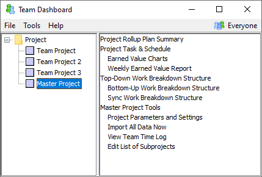

Add Team Projects to Master Project (Program Leader)
After you create the master project, you must tell the dashboard
which team projects it contains. To do so, follow these steps:
- If the Team Dashboard is not already
running, start it using the appropriately named shortcut on the team
leader's computer.
- In the Team Dashboard window, use the
Hierarchy Menus to navigate to your master project. Click the down
arrow to the right of the Script Button.

- Select Edit List of Subprojects from the
menu that appears. A web page will be displayed, allowing you to add
subprojects to the master project.

In the current version of the dashboard, note that the following
limitations apply:
- A master project can only include team
projects from within the same dashboard instance.
- A master project can only include team
projects that are based upon the same metrics collection
framework.
- A team project can only belong to one
master project. If you attempt to add the team project to a second
master project, it will be silently removed from the first master
project.